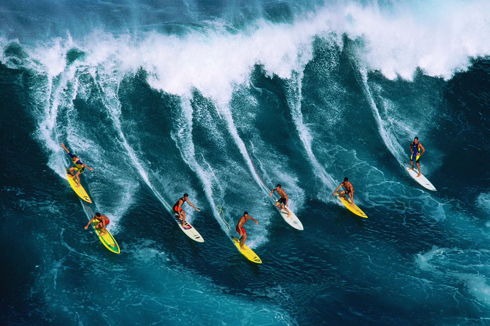
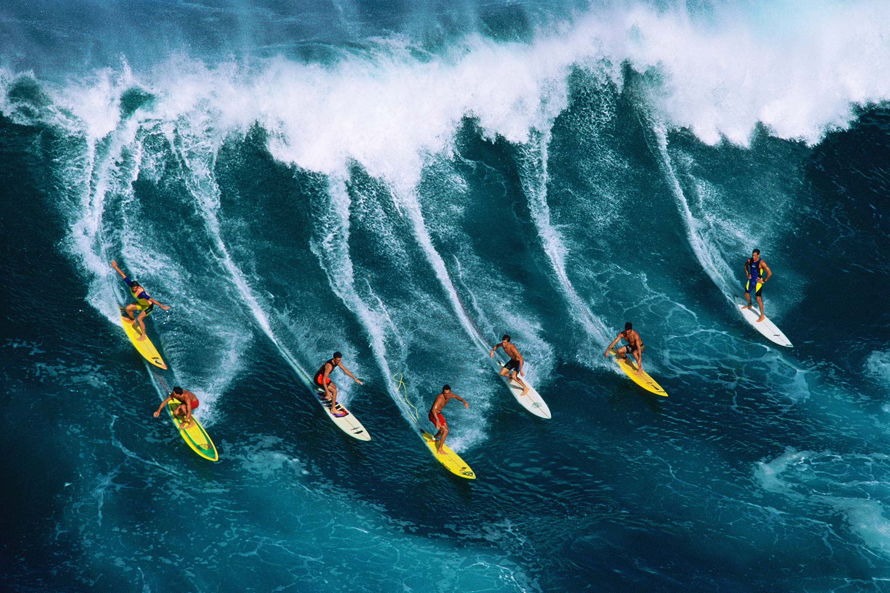
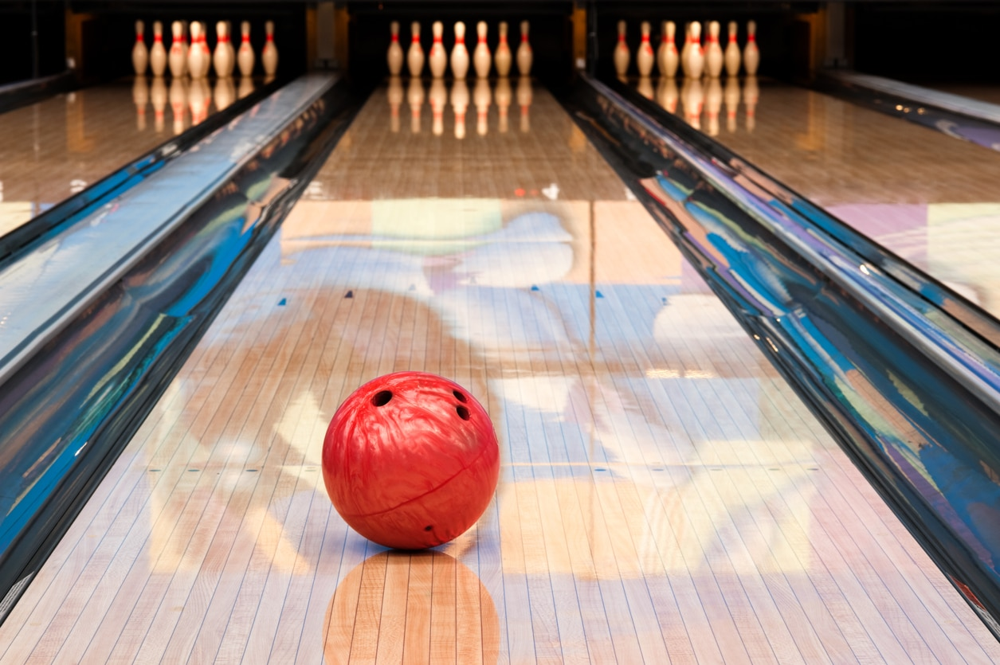
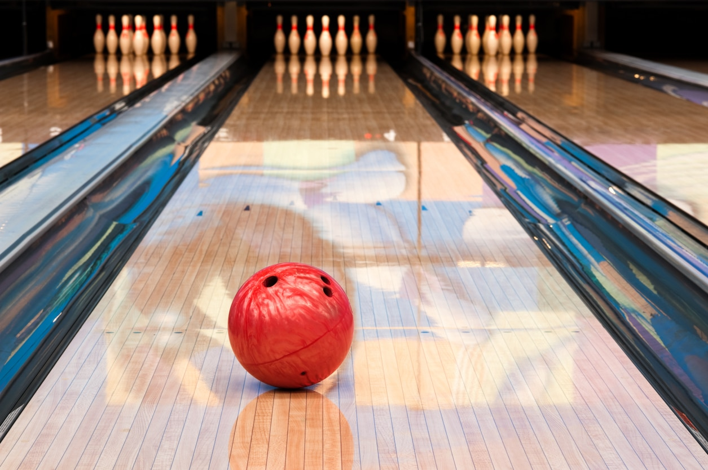

 


Tennis
Tennis is a racquet sport that can be played either solo (against one opponent) or (each team has two players) doubles. Each player hits a hollow rubber ball wrapped in felt over or over a net and into the other team's court using a tennis racket that is cord-strung. The goal of the game is to move the ball in a way that prevents the other team from playing a legal return. The player who is unable to successfully return the ball will not receive a point; instead, the opponent will.